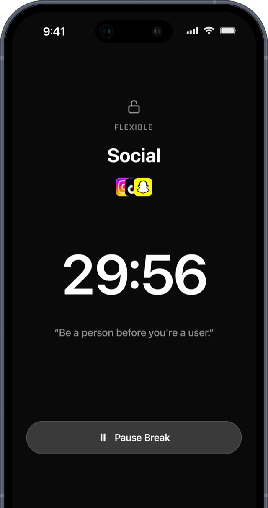
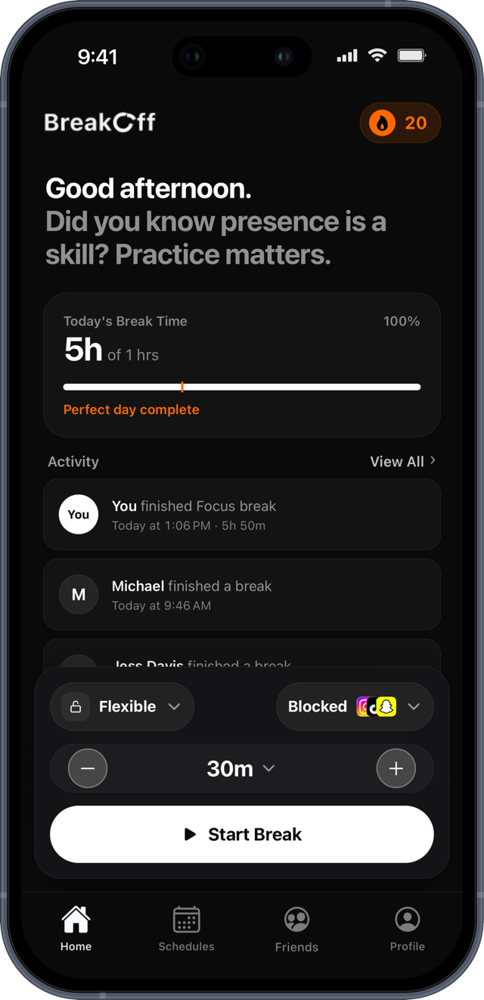
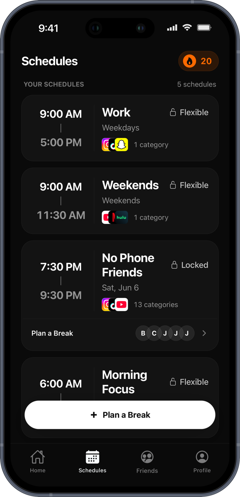
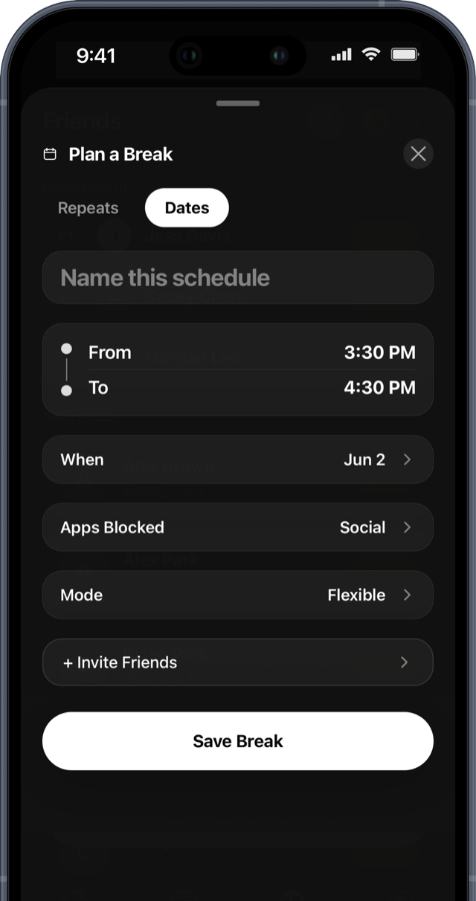
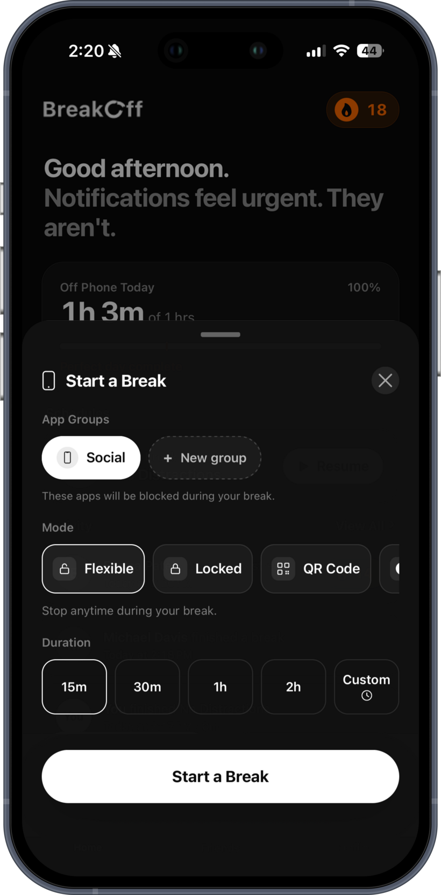
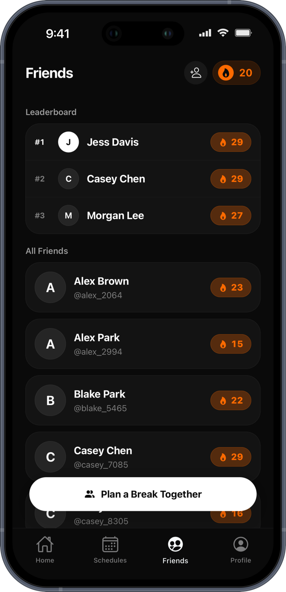
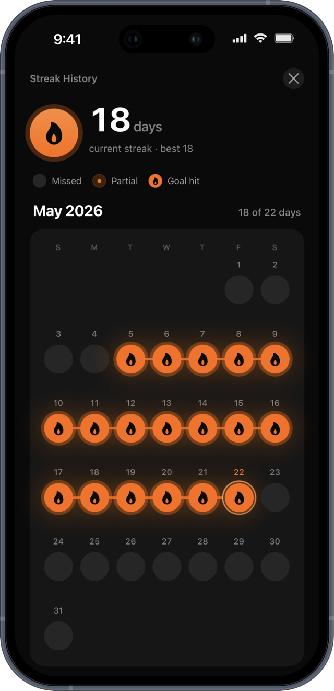

BreakOff helps you decide when your phone is useful, and when it should get out of the way. Build streaks, earn real rewards, and take control of your screen time.



Your phone should work for you, not the other way around. BreakOff gives you the tools to decide when it's useful, and when it should get out of the way.

Plan a one-off break for the future or set up a repeating one. Pick the days, set the time, and choose what gets blocked. BreakOff takes care of the rest.
Create custom break schedules that fit your life. Set different rules for weekdays, weekends, or specific times.
Track your daily break goals and watch your streaks grow. Stay motivated with clear, visual progress indicators.
Block distracting apps during your break sessions. Choose from presets like Flip Phone mode or customize your own blocklist.
Turn any QR code or NFC tag into a commitment device. Scan or tap to start, and your break won't end until you go back and scan or tap it again. See how it works
One tap ends your scrolling for good. “I'm Done” locks your distracting apps until midnight, no pause, no undo. The strongest commitment BreakOff offers.
Add friends by username and take phone-free breaks together. Accountability works better with someone in it with you. Available for ages 16 and up.
See how your streaks and focus hours stack up against your friends. A little friendly competition goes a long way toward staying off your phone.
Most app blockers keep the escape hatch in your pocket. BreakOff lets you start a break by scanning a QR code or tapping an NFC tag, and that same code is the only thing that ends it. Leave it on the fridge and your apps stay blocked until you walk to the fridge.

Any QR code works. Print one, or use a code that is already sitting in your house: on a coffee bag, a poster, a piece of mail. Scan it to start the break, scan it again to end it. Nothing to buy and nothing to assemble.
Hold your phone to an NFC sticker and the break starts. Bring your own tag, standard NTAG stickers run about a dollar each. Stick one wherever you want your phone to stay out of, then tap it again when you are ready to come back.
You are not fighting the urge at 9pm. You are just too far from the code to give in without noticing what you are doing.
Tapping a tag is a physical act with a start and a finish. Changing a setting is not, which is why settings are so easy to change back.
QR works out of the box with any code you can find or print. A ten pack of NFC stickers costs about ten dollars and lasts for years.

Add friends by username, send break invites, and take phone-free time together. The leaderboard ranks your streaks and focus hours against the friends you've added, a little accountability goes a long way. Friends is available for ages 16 and up.
Every break you take lights up your calendar. See your current streak, your best streak, and the days you hit your goal at a glance. A simple visual nudge to keep showing up for yourself.

Getting started with BreakOff is simple. No complicated setup, no learning curve.
Choose when you want to disconnect. Set daily schedules, pick specific days, and configure your break intensity.
Tap "Start Break" and let BreakOff handle the rest. Distracting apps are blocked and you're free to focus on what matters.
Track your progress, build daily streaks, and earn rewards for staying consistent with your digital wellness goals.
Join thousands building healthier relationships with their phones. Free to download, sign in with Apple, no password required. BreakOff Pro available from $4.99/month with a 14-day free trial.
Download for Free